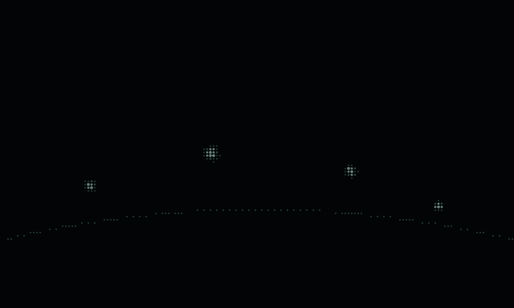

<!doctype html>
<html lang="es">
  <head>
    <meta charset="utf-8">
    <meta name="viewport" content="width=device-width, initial-scale=1">
    <title>El confín — estudio aislado</title>
    <link rel="stylesheet" href="./scene.css">
    <script type="module" src="./browser.mjs"></script>
  </head>
  <body>
    <footer aria-label="Paisaje distante, cuatro presencias sobre un horizonte oscuro">
      
      <canvas id="scene" width="1280" height="768" aria-hidden="true"></canvas>
    </footer>
  </body>
</html>
